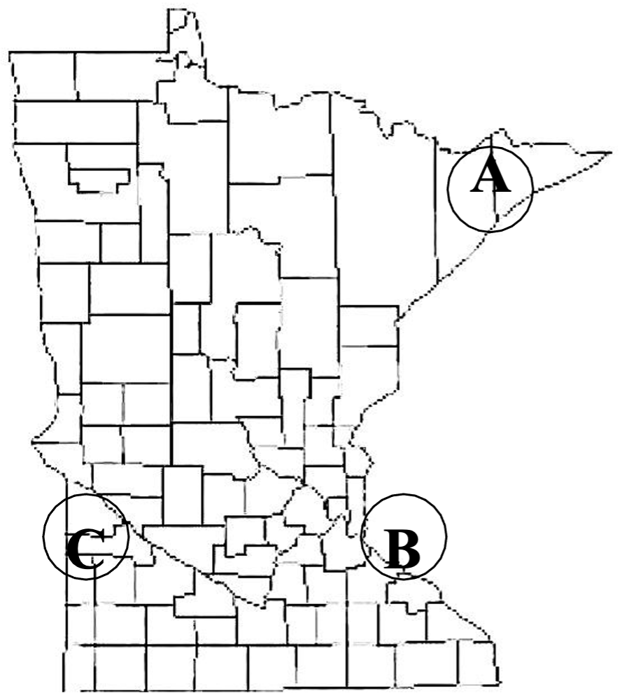
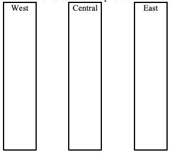
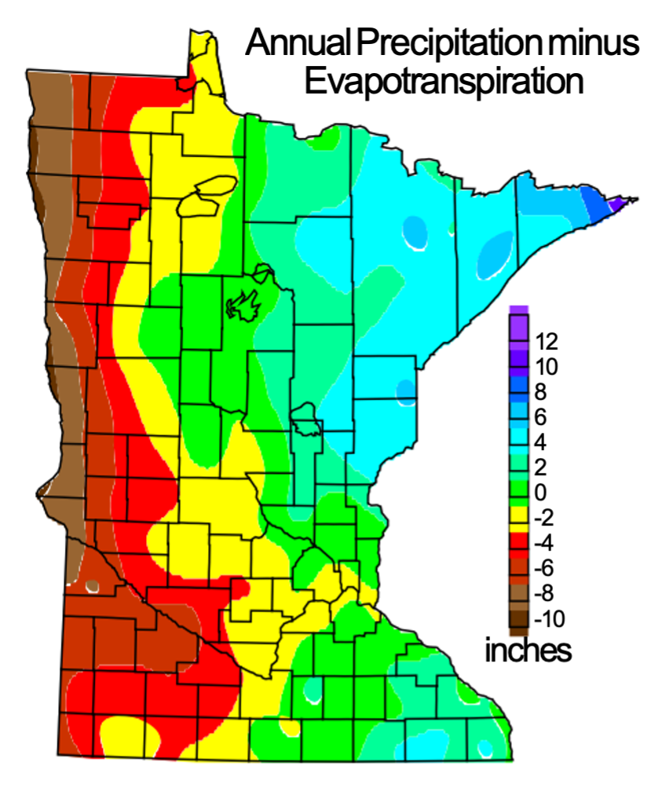
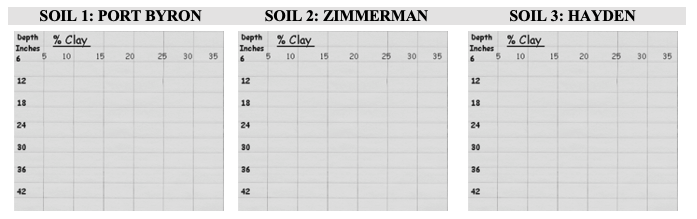

| GLACIAL TILL | Observed Characteristics (Color, texture, coarse fragments) |
| Superior Lobe Till | |
| Des Moines Lobe Till |
9 Five Soil Forming Factors
Objectives
- To understand the interaction of soil forming factors and the soil forming processes in the formation and evolution of soils. Soils will develop different characteristics due to the action of climate and biotic factors acting on a parent material on a particular landscape position over time. The additions, losses, translocations, and transformations to the soil profile develop soil horizons.
Key Words & Concepts
- Residuum
- Catena
- Soil “age”
- Lacustrine
- Alluvial
- Till
- Eolian
- Loess
- Calcareous
- Colluvial
- Esker
- Moraine
- Leaching
- Evapotranspiration
- Native vegetation
- Erosion
- Deposition
- Aspect
- Horizonation
- Backslope
- Summit
- Shoulder
- Footslope
- Infiltration
- Drainage classes
- Mottles
- Sesquioxides
9.1 INVESTIGATION A: Residual Parent Materials
Soils develop in many different kinds of parent materials. Parent material, in some cases, can be the bedrock under the soil and this non-transported parent material is called residuum. The soils that develop in residuum can be shallow if the rock is hard and difficult to weather, or deep if the rock is soft or has weathered for a long time. In Minnesota, four types of bedrock can be located that are only thinly or not covered by glacial drift and thus can become residual parent material— limestone, sandstone, basalt, and granite. Use the depth to bedrock map and simplified geological map to describe the most likely rock type for residual soils at points A, B and C.

A: B: C:
9.2 INVESTIGATION B: Clay Mineral Block Structures
In Minnesota, most soils are formed in a parent material that was transported by ice, wind or water. Ice deposited glacial till, water deposited glacial outwash, glacial lacustrine and alluvium, and wind deposited eolian sand and loess. Observe the samples of transported parent materials and note characteristics for each sample. These characteristics (particularly color and texture) are very useful for identifying the parent material of many Minnesota soils.
| WATER SORTED | Observed Characteristics (Color, texture, coarse fragments) |
| Lacustrine | |
| Outwash | |
| Alluvium |
| WIND SORTED | Observed Characteristics (Color, texture, coarse fragments) |
| Dune sand (eolian; transported very locally by wind) | |
| Loess |
9.3 INVESTIGATION C: Climatic Factors
Climate refers to the amount of precipitation (rain, snow, humidity) and the temperature in a given locale. The hotter and more humid a climate, the faster and more completely it is going to weather into soil. If a climate is cool and or dry, the weathering process proceeds more slowly. Below are temperature and precipitation maps for Minnesota. The difference in temperature will not change the weathering of rocks in Minnesota. However, the precipitation and temperature together will influence the leaching and horizon formation. Calcium carbonate will occur closer to the surface in soils with less leaching as in western Minnesota. NOTE: The diagram below shows the general pattern but DOES NOT correspond to the exact depth of leaching for any one particular profile.
- Match each soil profile with its location in Minnesota by the depth to CaCO3 (Bk or Ck). Use HCl to determine depths to carbonates.
 
- For a more detailed and complex representation of the depth to carbonates in soils across Minnesota, see the depth to carbonates map in Soil Explorer on the iPads. In addition to climate, which two of the other four soil forming factors contribute the most to these patterns, and why?
9.4 INVESTIGATION D: Biotic Factors (Vegetation)
One of the most obvious biotic factors is the effect that vegetation has on soil formation. The most common pre-European settlement vegetative types (this is the vegetation the soil formed under for ~ 10,000 – 13,000 years after glaciation – the native vegetation in many areas has been replaced by agriculture or other land uses, but only very recently) in Minnesota are forest, grassland (prairie), and a transitional zone between forest and grassland prairie (called savannah). Using the six micro-monoliths (1/4 scale), determine the vegetation that the following soils were formed under, and briefly explain your answer.
| Soil | Most Likely Historic Vegetation (Forest, Prairie, or Savannah (Transition)) | Explanation (1 in on monolith = 4 in actual) |
| 1 | ||
| 2 | ||
| 3 | ||
| 4 | ||
| 5 | ||
| 6 |
9.5 INVESTIGATION E: Topographic Factors
When forming within a landscape, soils with the same parent material, vegetation, and climate often have different depths to the water table (e.g. are different due to topography only). This grouping of soils is called a catena. Find and examine the Clarion, Nicollet, Webster, and Glencoe monoliths against the elevator shaft in the display area and determine the location of each soil on the following catena block diagram and explain your answers.
| Topography | Soil Name | Explanation |
| Summit/Well Drained; No Mottles | ||
| Backslope/Moderately Well Drained; Gray mottles 50-75 cm deep | ||
| Footslope/Somewhat Poorly Drained; Gray mottles 25-50 cm deep | NOT PRESENT IN DISPLAY | NOT PRESENT IN DISPLAY |
| Toeslope/Poorly Drained; Gray (Bg) colors below dark A | ||
| Depression/Very Poorly Drained; Gray Cg colors below thick A |
9.6 INVESTIGATION F: Time Factors
Soil “age” is measured in geologic terms (Minnesota soils are quite young due to glacial deposits that happened only 10,000 – 13,000 years ago), as well as measured in terms of development (soils in colder climates develop slower and therefore show “young” morphology). For practical purposes, the number and type of horizons and the depth of soil development (pedogenic processes or A, E, & B horizons) is a decent starting indicator of a soil’s age. Determine the “age” sequence the three micro-monoliths on display.
| Age | Soil Name (Soil series: Moody, Ontonagon, or Menahga) and Reasoning |
| Youngest | |
| Middle | |
| Oldest |
9.7 INVESTIGATION G: Clay Eluviation/Illuviation and the Soil Forming Factors
Graph the % clay for each profile with depth. When we graph the clay % with depth we can easily identify whether or not there is a peak in clay percentage in the B horizon which is indicative of the eluviation of clay from the top of the profile and its illuviation lower in the profile. (Note: these are micro-monoliths at 1:4 scale, or 1 inch on monolith = 4 inches on the graph).

All three of these soils developed under a similar climate in central-eastern Minnesota. The Zimmerman soil is formed in outwash under forest vegetation. The Port Byron soil is formed in loess under grassland vegetation. The Hayden soil is formed in glacial till under forest vegetation. REMEMBER: Soils developed under grasslands typically have more organic matter and organic matter is an excellent binding agent of mineral particles (remember the pictures of granular structure and the clay particles bound by OM).
- Which of these soils exhibits a clear peak in clay with depth?
- Knowing what you know about the soil forming factors and their effect on soil development and soil morphology, explain why the soil listed in your answer to question 1 has a peak in clay due to eluviation/illuviation while the other soils do not.
9.8 INVESTIGATION H: Properties from Factors and Factors from Properties
Some knowledge of soil forming factors at work on a particular landscape or in the formation of a particular soil allow us to predict soil properties such as horizon morphology, texture, color, organic matter, and mineralogy. Below, complete the tables with the choices given on the handout (use each only once) based on your knowledge from class. Use the information on both the “Soil Forming Factors” and “Soil Properties” tables to fill in the blanks. All of the information you need should be present in these tables, however, you can use the monoliths in the display area to help you with your choices if that helps you to better visualize the soils.
| Soil Series Name | Parent Material | Climate | Organisms (Vegetation) | Relief (Hillslope Position) | Time |
| Hayden | Des Moines Lobe Till | Humid Temperate | Forest | Summit/Shoulder | ~10,0 years |
| Port Byron | Humid Temperate | Summit/Shoulder | ~10,0 years | ||
| Zimmerman | Humid Temperate | Forest | Summit/Shoulder | ~10,0 years | |
| Cecil | Igneous/Metamorphic Residuum | Humid Subtropical | Summit/Shoulder | ~200,0 years | |
| Rifle | Organic Deposits | Wetland | Toeslope | ~10,0 years | |
| Balaton | Des Moines Lobe Till | Grassland | Summit | ~10,0 years | |
| Kingsley | Superior Lobe Till | Humid Temperate | Forest | Summit/Shoulder | ~10,0 years |
| Soil Series Name | Dominant Texture | Subsoil Color | Drainage Class | Topsoil Organic Matter Content (%) | Mineralogy | Coarse Fragments |
| Hayden | Clay Loam/Silty Clay Loam | 2Y | Well Drained | Illites/Smec./Verm. | Y | |
| Port Byron | Silt/ Silt Loam | 10YR | 10% | Illites/Smec./Verm. | N | |
| Zimmerman | Sand/Loamy Sand | 10YR | Well Drained | 5% | Quartz | Y |
| Cecil | Clay Loam/Clay | 2R | Well Drained | 5% | N | |
| Rifle | N/A | 10YR | N/A | N | ||
| Balaton | Clay Loam/Silty Clay Loam | Well Drained | 10% | Y | ||
| Kingsley | Sandy Clay Loam/Loam | Well Drained | 8% | Illites/Amphiboles/Pryoxenes/Iron Oxides | Y |